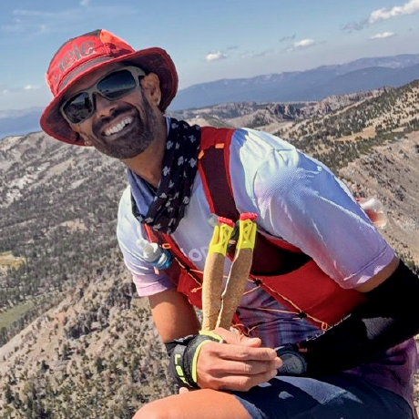

Curriculum Vitae
Anil Gypsy Wild
Senior quantitative UX researcher and HCI-trained statistical programmer working across AI evaluation, survey measurement, behavioral analytics, experimentation, and product strategy.

Profile
Research that can move from ambiguity to action.
Selected Experience
Applied research leadership
Quantitative UX, product strategy, and statistical consulting
- Designed research programs connecting product questions to measurable user behavior, trust, friction, and decision quality.
- Built survey and analysis workflows using R, Python, SQL, preference modeling, segmentation, and decision-oriented reporting.
- Produced confidentiality-safe evidence packs for teams needing rigorous synthesis without exposing client-sensitive material.
Google X / Wing, Microsoft Research, and related AI evaluation work
- Led and supported research around autonomous delivery, AI-assisted reasoning, trust-sensitive workflows, and model-driven decision support.
- Developed measurement approaches for trust, distrust, reliance, system acceptance, interpretability, and human control.
- Translated complex technical behavior into research questions that product, design, and engineering teams could act on.
Docker, Cloudera, Workday, RightScale/Flexera, and startup-stage work
- Conducted mixed-method and quantitative research for complex workflows, developer tools, cloud platforms, enterprise software, and adoption problems.
- Built segmentation systems, onboarding research, taxonomy validation, heuristic evaluations, benchmark studies, and journey diagnostics.
- Helped teams choose practical next steps when evidence was incomplete, noisy, or distributed across multiple data sources.
Methods and tools
- Survey design, scale development, benchmarking, Likert and ordinal modeling, confidence intervals, and power simulation.
- MaxDiff, conjoint-style studies, ranking tasks, segmentation, clustering, classification, and preference modeling.
- Behavioral analytics, funnel diagnosis, cohort analysis, experiment design, prototype comparison, and research automation.
- R, Python, SQL, reusable notebooks, reproducible analysis, and stakeholder-ready research artifacts.
Computer science, HCI, and applied statistical research
- Ph.D. in Computer Science with research spanning human-computer interaction, adaptive systems, behavioral modeling, and statistics.
- Published and applied work includes simulation-based UX evaluation, preference measurement, AI trust/distrust measurement, and decision support.
Public Positioning
What I can share publicly
Some of my most substantial AI and product research is confidential client or employer work. I describe methods, problem classes, and public-safe outcomes here, but underlying artifacts, source materials, and proprietary research details are not shared without permission.